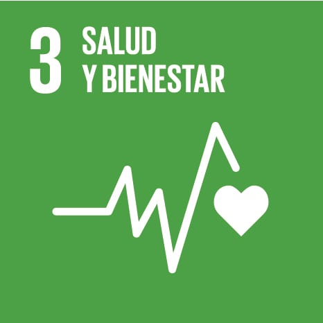

Cada año mueren unos 5 millones de niños antes de cumplir los cinco años, la mayoría por causas que se pueden prevenir o tratar. Alrededor de 300.000 mujeres fallecen cada año por complicaciones del embarazo y el parto. Las vacunas, el acceso a servicios sanitarios básicos y la lucha contra enfermedades como el VIH, la tuberculosis o la malaria han salvado millones de vidas, pero todavía hay muchas personas sin cobertura sanitaria esencial.
Volver al menú